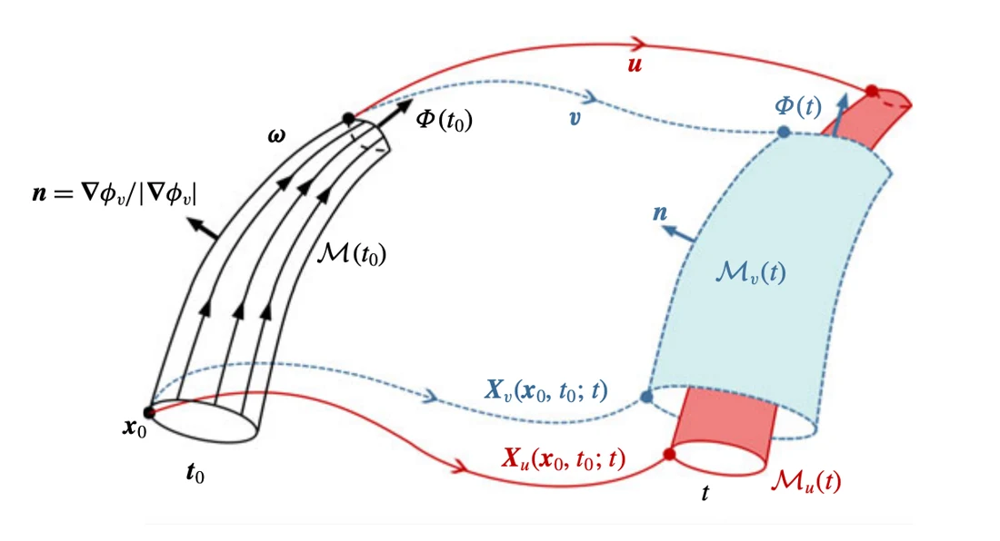

In an ideal fluid, classical circulation and vortex theorems provide a clear relationship between motion and vortex surfaces. Viscosity and other non-ideal effects complicate that relationship, making physical-velocity transport insufficient for tracking the same structures.
在理想流体中，经典环量和涡动力学定理给出了运动与涡面之间的清晰关系。黏性等非理想因素会改变这种关系，使仅使用物理速度输运不足以持续追踪相同结构。
The paper separates two questions that coincide in ideal flow: how fluid particles move, and which velocity can preserve a vortex surface. In a non-ideal flow, they need not have the same answer.
论文区分了理想流中相互一致的两个问题：流体质点如何运动，以及何种速度能够保持涡曲面。在非理想流中，二者不一定有相同答案。
Transporting surfaces with a virtual velocity以虚拟速度输运曲面
The paper shows that the classical theorems can extend to some non-ideal flows when a globally smooth circulation-preserving virtual velocity exists. A vortex-surface field follows the surfaces using that velocity. An explicit construction is obtained for a modified dissipative flow that prevents vortex-line reconnection.
论文说明，当全局光滑的保环量虚拟速度存在时，经典定理可推广到部分非理想流动。涡面场借助该速度追踪结构。对于一种阻止涡线重联的修正耗散流动，研究给出了显式构造。
A material surface follows the physical velocity of fluid particles, but a vortex surface is defined by its relationship to vorticity. Those two notions coincide under the classical ideal assumptions and can separate once non-ideal terms act. The virtual velocity is chosen to preserve the circulation-related structure needed for vortex tracking. It is therefore a mathematical transport field with a specific conservation role, not an additional physical motion of the fluid.
物质面跟随流体粒子的物理速度，而涡面由它与涡量的关系定义。在经典理想条件下两者一致，非理想作用出现后则可能分离。虚拟速度被选取为保留涡面跟踪所需的环量结构，因此它是具有特定守恒作用的数学输运场，而不是流体额外产生的一种物理运动。
{kind=link}

Checking the conditions for preservation检验保持性质所需的条件
Two settings establish the role of the virtual velocity. A modified dissipative flow admits an explicit circulation-preserving construction and makes exact tracking testable. A magnetohydrodynamic Taylor–Green flow then examines an approximate construction when a globally smooth one is unavailable. Comparing transport by physical and virtual velocities shows which apparent surface changes arise from the tracking rule rather than the underlying vortex geometry.
两类设置验证虚拟速度的作用：修正后的耗散流动允许显式保持环量的构造，从而检验精确跟踪；磁流体 Taylor–Green 流动则在全局光滑构造不可用时检验近似方法。比较物理速度与虚拟速度输运，有助于区分哪些表面变化来自跟踪规则，哪些来自涡结构本身。
What can remain frozen in a non-ideal flow非理想流中哪些结构仍可冻结
When a globally smooth solution is unavailable, an approximate virtual velocity can still improve tracking. In the studied magnetohydrodynamic Taylor–Green flow, it better preserves vorticity flux and removes spurious deformation caused by the Lorentz force. The existence condition remains central: the paper does not claim exact frozen-in tracking for arbitrary non-ideal flows.
即使不存在全局光滑解，近似虚拟速度仍能改善追踪。在所研究的磁流体 Taylor–Green 流动中，它更好地保持了涡量通量，并消除了洛伦兹力导致的虚假形变。存在性条件仍是关键，论文并未声称能够在任意非理想流动中实现精确冻结追踪。
Where the construction applies这一构造的适用范围
The contribution changes the coordinate system used to follow a structure without claiming that non-ideal physics disappears. This distinction is essential: a useful virtual transport can preserve a geometric description even when material transport cannot. The existence and smoothness of the virtual velocity determine when the result is exact, and when it should instead be understood as an approximation.
该工作的贡献是改变跟随结构的输运描述，而不是让非理想物理效应消失。即使物质输运无法保留几何结构，有效的虚拟输运仍可能做到。虚拟速度是否存在且光滑，决定结论何时精确、何时只能作为近似理解。
Paper & authors论文与作者
Tracking vortex surfaces frozen in the virtual velocity in non-ideal flows ↗
Cite this work
@article{Hao_2019,
title = {Tracking vortex surfaces frozen in the virtual velocity in non-ideal flows},
volume = {863},
ISSN = {1469-7645},
url = {http://dx.doi.org/10.1017/jfm.2018.1014},
DOI = {10.1017/jfm.2018.1014},
journal = {Journal of Fluid Mechanics},
publisher = {Cambridge University Press (CUP)},
author = {Hao, Jinhua
and Xiong, Shiying
and Yang, Yue},
year = {2019},
month = Jan,
pages = {513–544}
}